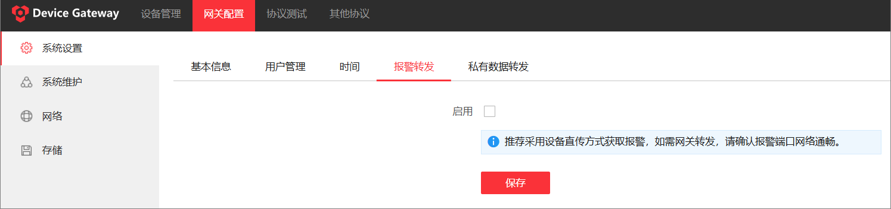
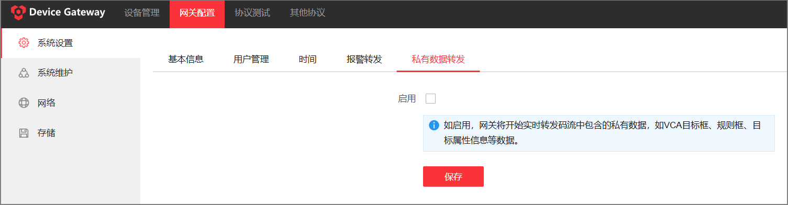
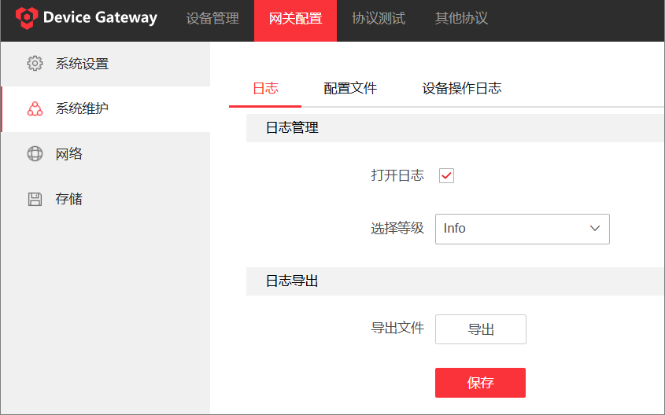
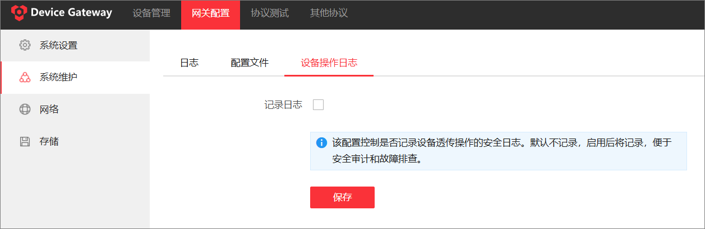
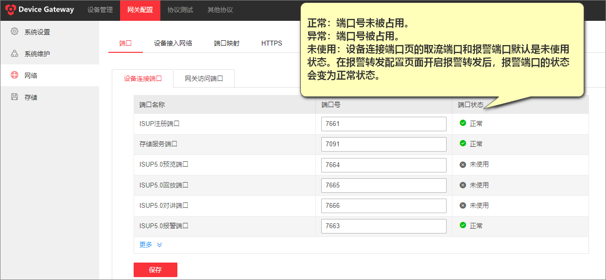
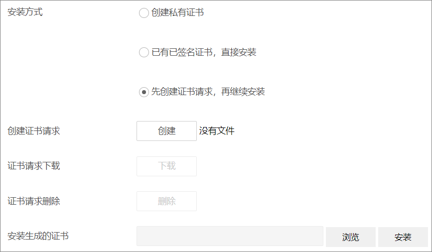
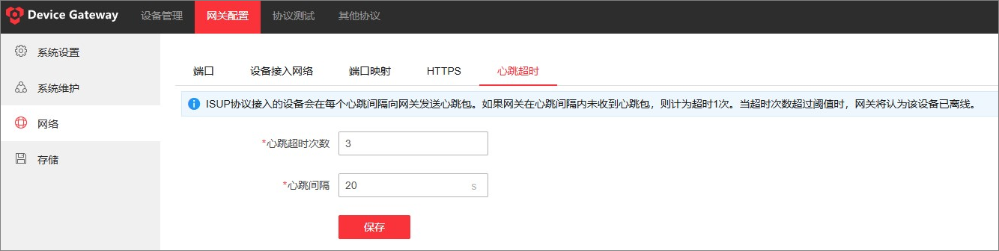

可在基础配置模块配置报警转发等系统设置、导出系统日志、配置端口、HTTPS和配置存储路径等。本文重点介绍如何启用报警转发、启用私有数据转发、导出设备日志、配置是否记录设备操作日志、修改端口、配置HTTPS和心跳超时。
如需通过 Device Gateway 转发设备端的报警事件，需要启用报警转发功能。三方平台可布防订阅接口接收设备报警。默认不启用报警转发功能。
单击。

如需通过 Device Gateway 实时转发回放/预览码流中包含的私有数据（VCA目标框、规则框等），需启用私有数据转发功能。默认不启用该功能。
单击。

单击。
勾选打开日志，并选择日志等级。
只记录等级等于或高于所选择等级的日志。
单击导出，导出日志文件到本地。
（可选）单击保存，保存日志等级等配置。

为减少不必要的设备操作日志记录导致的日志文件膨胀，Device Gateway支持设置是否记录设备透传操作的安全日志。如启用记录日志功能，系统将存储用户对已存在的设备的操作记录（已删除的设备将不再记录），并每隔180天自动清理日志。默认不启用记录日志功能。
单击。

当默认的端口号被占用时，可以修改端口号。
单击，编辑设备连接端口号和网关访问端口号后，保存配置。

HTTPS 协议是由SSL+HTTP协议构建的可进行加密传输、身份认证的网络协议，可提高Web 访问安全性。若设置端口号为443，IP地址为192.168.1.64，则需要再Web浏览器地址栏输入https://192.168.1.64:443进行访问。共有三种HTTPS证书的安装方式。
单击。
选择一种证书安装方式并创建证书。
|
Method |
Description |
|---|---|
|
创建私有证书 |
在私有证书创建区域填写国家、域名/IP、有效期等参数后，单击保存。
说明
如果已安装过证书，则创建私有证书选项显示为置灰状态。 |
|
已有已签名证书，直接安装 |
单击浏览，选择本地已有的签名证书后，单击安装。 |
|
先创建证书请求，再继续安装 |
|
创建证书后，单击启用，使安装的证书生效。
单击保存，保存当前设置。

为防止网络不稳定导致设备频繁掉线，Device Gateway支持配置设备心跳超时参数。默认心跳间隔30s，心跳超时阈值3次，即ISUP协议接入的设备每30秒发送一次心跳包，Device Gateway在30秒内未收到心跳包则计为超时1次，超时3次即视为设备离线。
